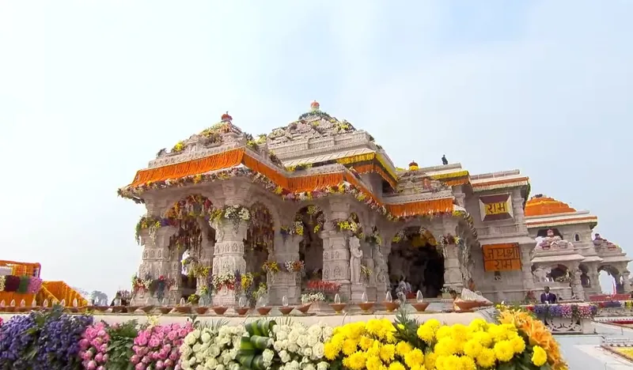

Home / Blog / VIP Darshan Ayodhya

In this guide
VIP Darshan Ayodhya Ram Mandir is an excellent option for devotees who want a smooth and comfortable visit to the sacred birthplace of Lord Ram. Every day, thousands of pilgrims visit Ayodhya to seek blessings at the magnificent Ram Mandir. However, due to large crowds and long waiting times, many travelers prefer a well-organized darshan experience that helps them make the most of their spiritual journey.
Benefits of VIP Darshan Ayodhya Ram Mandir
A planned darshan experience allows devotees to enjoy their visit without unnecessary stress. Moreover, it helps travelers manage their time efficiently, especially during weekends, festivals, and special religious occasions. Visitors can focus on prayer, devotion, and the spiritual atmosphere of the temple rather than worrying about travel arrangements.
The Ram Mandir is one of the most important religious landmarks in India. Furthermore, the temple's grand architecture, beautiful surroundings, and deep spiritual significance attract devotees from across the country and abroad. A visit to this sacred site is considered a once-in-a-lifetime experience for many pilgrims. Choosing a premium Ayodhya Yatra Package ensures that senior citizens and families can execute their visits with absolute comfort.
Attractions to Visit Along With Ram Mandir
While visiting Ayodhya, travelers can also explore several other important religious sites. These include Hanuman Garhi, Kanak Bhawan, Dashrath Mahal, and the holy Saryu Ghat. In addition, visitors can spend peaceful moments near the Saryu River and experience the divine atmosphere of the city.
Many pilgrims choose to combine temple visits with local sightseeing. Therefore, a well-planned itinerary allows them to cover major attractions in a single trip. As a result, they can enjoy both spiritual fulfillment and cultural exploration. If you are starting your yatra from Delhi, we recommend checking out our comprehensive Delhi to Ayodhya Trip Package guide.
Why Choose VIP Darshan Services?
A VIP Darshan Ayodhya Ram Mandir experience is ideal for families, senior citizens, groups, and devotees with limited time. Moreover, it offers convenience, comfort, and a hassle-free travel experience. Whether you are visiting Ayodhya for the first time or returning for another pilgrimage, proper planning can make your journey more memorable. Guided yatra operators provide direct private vehicle drop-offs, pre-registered entry passes, and dedicated guides to make the entire yatra smooth.
How to Book Sugam Darshan / VIP Passes?
For a hassle-free visit, devotees can book their shri ram janmabhoomi online booking passes directly on the official Shri Ram Janmabhoomi Teerth Kshetra trust portal. The trust offers Sugam Darshan (VIP Pass) slots online that allow entry through dedicated gates. However, because slots are limited, it is best to secure them weeks in advance. If slots are unavailable, booking an all-inclusive yatra via a registered travel agency in Ayodhya is the most dependable option, as they arrange local transport, guides, and priority queue assistance.
Best Places to Stay & Dharamshalas in Ayodhya
Finding comfortable stays close to the temple is vital for a peaceful pilgrimage. Popular choices include the premium Birla Dharamshala Ayodhya, which offers clean rooms and close proximity, and the renowned Janki Mahal Trust. For devotees traveling with families who prefer hotel comforts, there are several 3-star and luxury properties near the Ram Janmabhoomi corridor. Booking your rooms and transport together in an integrated package ensures that you do not face last-minute availability issues during peak festival seasons.
If you plan to extend your spiritual trip to cover Kashi Vishwanath in Varanasi or the holy Sangam in Prayagraj, we recommend reviewing our premium Prayagraj Varanasi Ayodhya Tour Package or visiting our sister portal Kashi Dharshan Yatra for Kashi travel support.
Book your VIP Yatra
Book Your VIP Darshan Yatra
Enjoy VIP Darshan assistance at Ram Mandir, private AC transfers, hotel bookings, and experienced local guides for a blissful yatra.